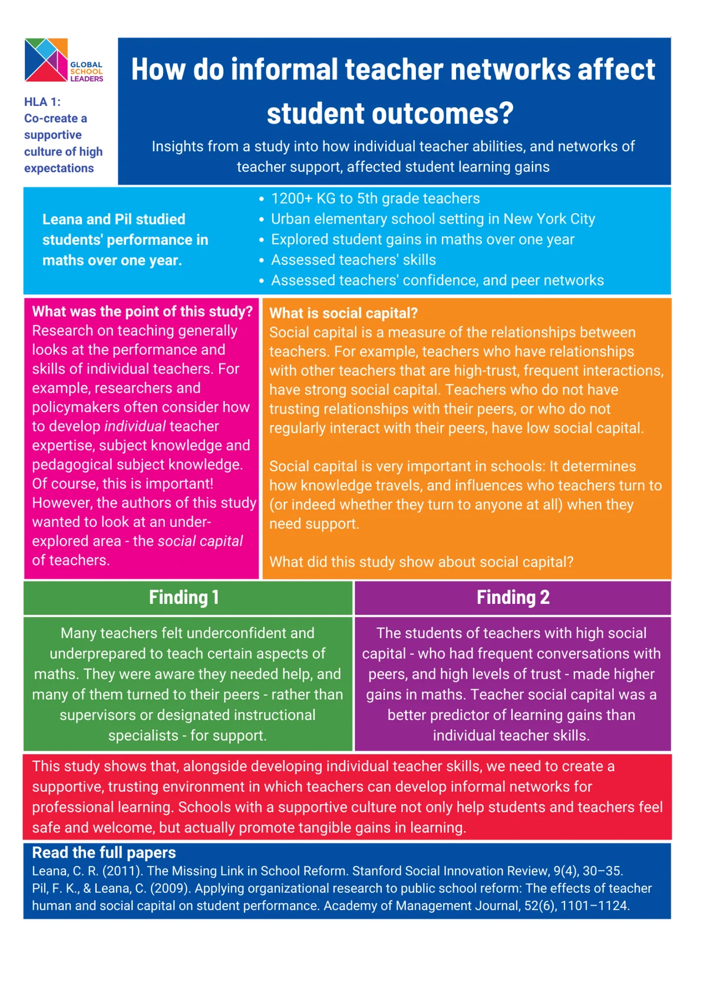
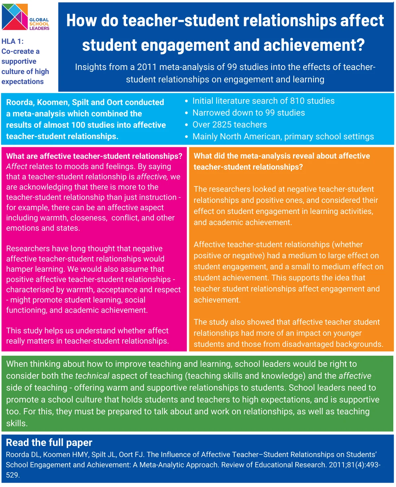
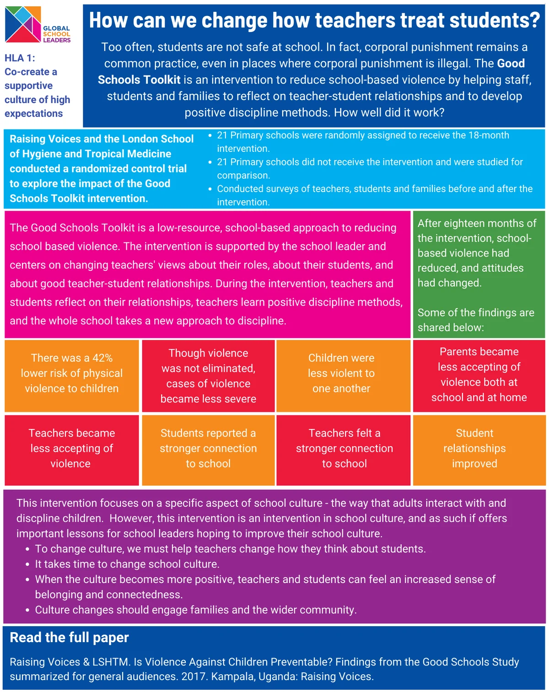

School Culture
Research and evidence
Evidence about school culture and expectations
Contemporary research has found that:
- Building a productive climate is a school leadership practice associated with positive student outcomes.
- To thrive at school, children must feel safe and welcome and have a sense of belonging.
- Improving schools and education systems requires building cultures of collaboration and learning.
- Effective educators develop and demonstrate several socioemotional competencies that they use to influence the learning environment, primarily through (1) treating students warmly and sensitively, (2) modeling socioemotional skills for students, and (3) providing a calm, trusting, and orderly learning environment.
- When teachers have high expectations of their students, students respond accordingly, and often meet expectations.
- When teachers have low expectations of their students, students respond accordingly, and their outcomes are limited - especially in the case of students from disadvantaged or marginalized backgrounds.
- When students have strong and supportive relationships with their teachers, students feel safe and secure at school, they form better relationships with their peers, and they make more academic progress.
Key studies

Leana, C. R. (2011). The Missing Link in School Reform. Stanford Social Innovation Review, 9(4), 30–35.

Roorda DL, Koomen HMY, Spilt JL, Oort FJ. The Influence of Affective Teacher–Student Relationships on Students’ School Engagement and Achievement: A Meta-Analytic Approach. Review of Educational Research. 2011;81(4):493-529.

Raising Voices & LSHTM. Is Violence Against Children Preventable? Findings from the Good Schools Study summarized for general audiences. 2017. Kampala, Uganda: Raising Voices.